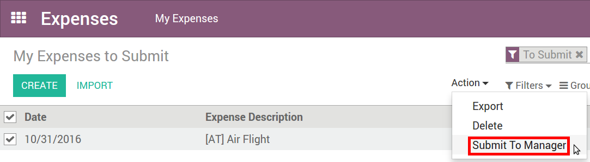

Record Expenses made by Company Employee¶
Manually¶
As an employee (Employee in user access rights), you can record expenses from
My Expenses ‣ Expenses to Submit.

- Select the related product and enter either the total amount you paid (with Quantity = 1) or the unit price if Quantity is countable (e.g. number of hotel nights).
- Enter the expense date.
- Choose if you paid the bill on your own (and expect to be reimbursed) or if the company paid directly (e.g. if you used a company’s credit card).
- Set the bill reference, add some notes if requested and attach a photo/scan of the receipt from the discussion thread. That will help the manager and the accountant validate it.

In one click from emails¶
Let your employees record their expenses from a simple email. Make a snapshot of the receipt and send it by email, or simply forward a bill!
The only thing to do is setting up an email alias in Expenses ‣ Configuration ‣ Settings (e.g. expenses @mycompany.odoo.com). For security purposes, only authenticated employee emails (cfr. Work Email in employee detail form) are accepted.
Tip
The expense product is set automatically if the mail subject contains the product’s internal reference between brackets (e.g. [Food]). Type the expense amount in the mail subject to set it on the expense too.
How to submit expenses to managers¶
When you are ready to submit your expenses to your manager (e.g. at the end of a business trip, or once a month), go to the menu My Expenses ‣ Expenses to Submit. Select all expenses from the list view and click on Action > Submit to Manager. Save the newly created expense report (i.e. set of expenses), and wait for your manager to approve it.
You can also submit expenses one by one from the Submit to Manager button on the form view of an expense.
All your submitted expense reports can be found in Expenses ‣ My Expenses ‣ Expense Reports.
How to approve expenses¶
HR and team managers get an overview of all expense reports to validate from the top menu To Approve ‣ Expense Reports to Approve. Such users must have at least Officers access rights for Expenses.